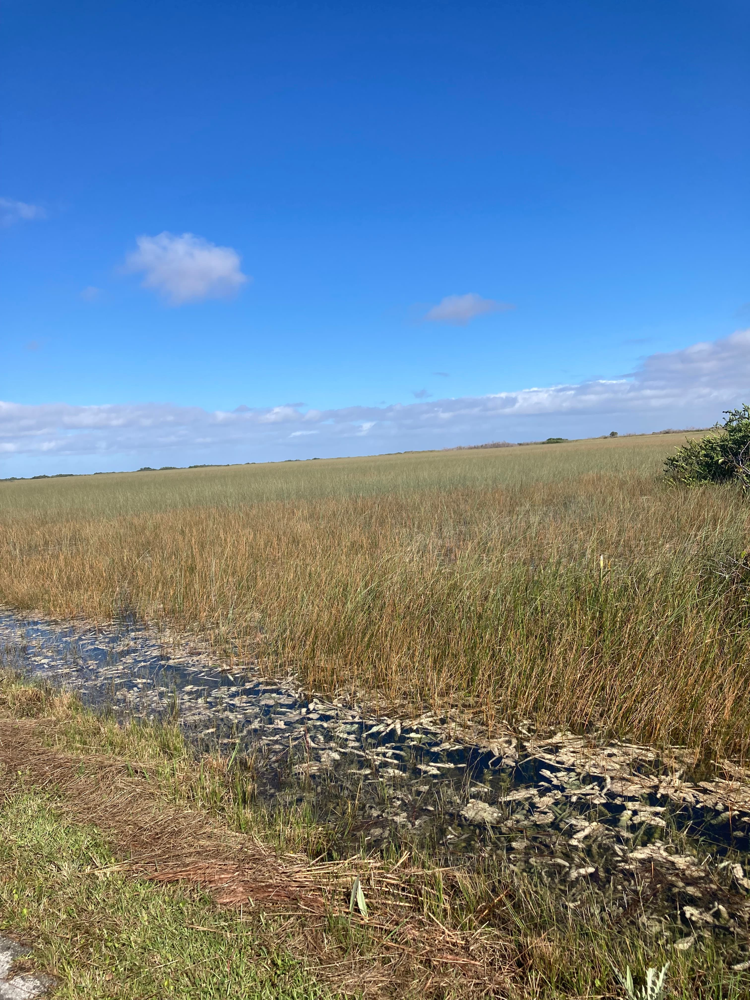

Dynamic Investment in Ecosystem Restoration
DraftThere is growing acknowledgment of the need to restore degraded environments. This paper studies optimal investment in ecosystem restoration under environmental change. We develop an optimal control model of the restoration decision to explicitly characterize the optimal extent and timing of restoration given time-dependent marginal damages. We provide the first results on optimal dynamic investment in ecosystem restoration, highlighting the important role that growth in restored patches plays in shaping the time profile of investment. We then apply the model in a numerical simulation of coastal wetlands restoration in Huntington Beach, California, that accounts for projected sea-level rise, uncertainty over flooding severity, and the option to abandon damage properties. Our results show that early investments in restoration are optimal in order build up a wetlands stock that can mitigate future flooding damages exacerbated by sea-level rise. We find large option values associated with delaying irreversible decisions to abandon damaged properties.